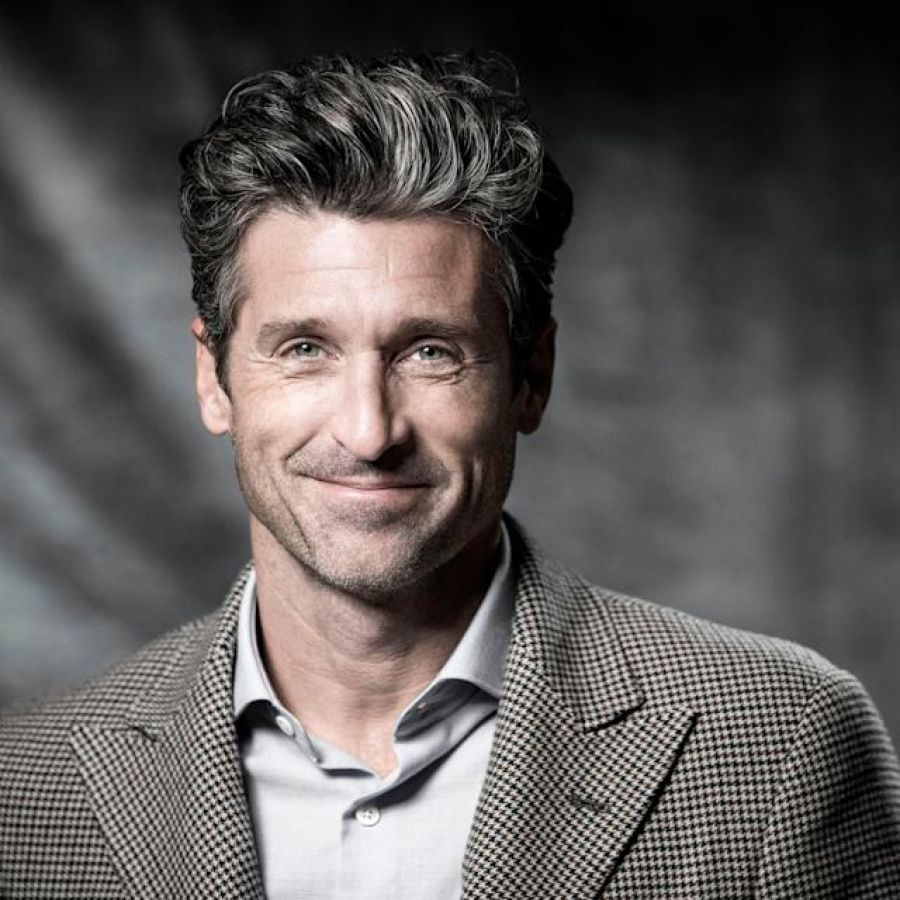
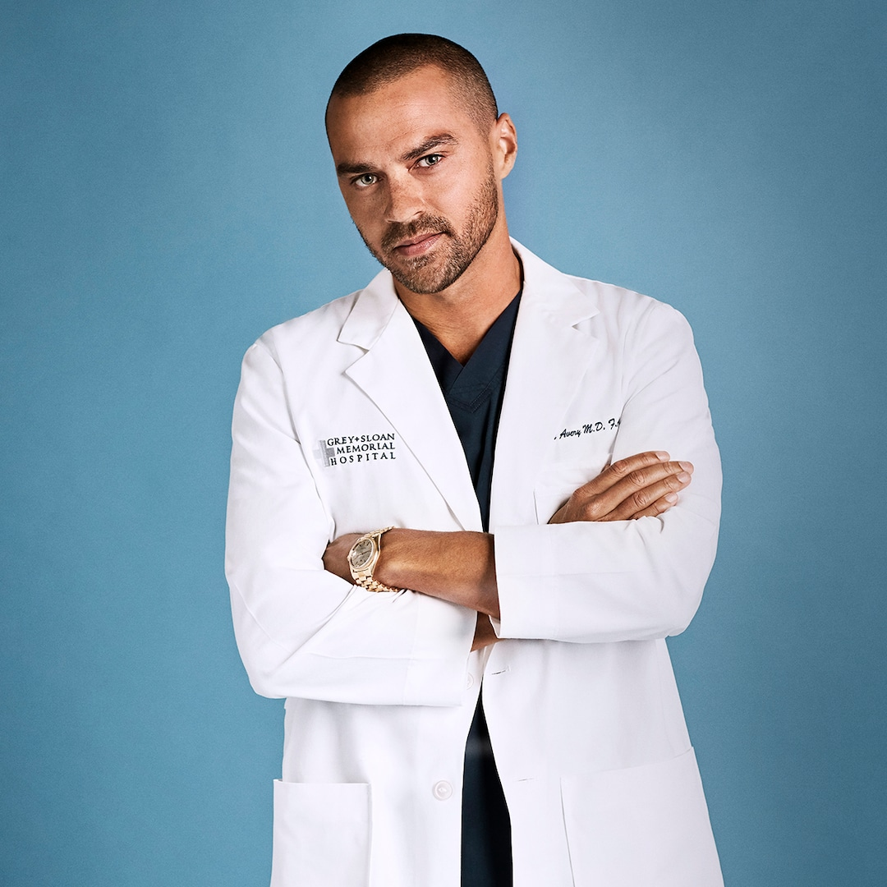
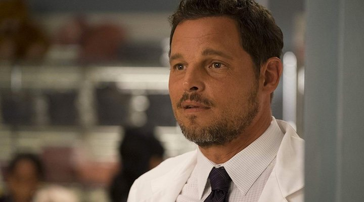
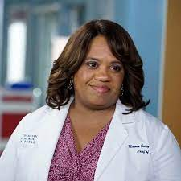

Es hija de Joseph E. Pompeo y de Kathleen B. O'Keefe. Su madre murió de una sobredosis de analgésico
cuando Ellen tenía cinco años, y su padre volvió a casarse poco después; él murió el 1 de septiembre
de 2012 luego de una batalla contra el cancer. En 2006, Pompeo dijo a Allure «creo que el hecho de
que mi madre haya muerto a una edad tan temprana, cuando tenía 33 años, hizo que yo apreciara tanto
la vida». Tiene cinco hermanos: tres hermanas (Maureen, Suzanne y Kathleen) y dos hermanos (Joey y
Dean) mayores que ella.
Se mudó a los 21 años de Everett a Miami gracias a sus amigos, donde trabajó como camarera en bares
cuando comenzó a salir con el fotógrafo de moda Andrew Rosenthal. Juntos, se trasladaron en 1995 a
la ciudad de Nueva York, donde fue abordada por una agente de casting quien la convenció de aparecer
en los comerciales de Citibank y L'Oréal.
Allí se sintió atraída por la actuación y tuvo algunas apariciones mínimas en series importantes,
además de algún papel en películas de baja categoría. Actualmente es una de las actrices más
apreciadas por todos, sobre todo gracias a su extraordinario papel en la conocida serie Grey's
Anatomy al igual que una de las actrices mejores pagadas según la revista Forbes.

Patrick Dempsey
Hijo de la secretaria escolar Amanda Caisson y del vendedor de seguros William A. Dempsey, el actor
nació en Lewiston (Maine) aunque se crio en Buckfield (Maine).
Asistió a los colegios Buckfield High School y St. Dominic Regional High School, del que se marchó
antes de graduarse. En aquella época era un experto malabarista y alcanzó la segunda posición en una
competencia nacional de malabarismo. A su vez, era un experto esquiador y durante su época de
colegio ganó el campeonato estatal de Maine en esta disciplina.
A los doce años le diagnosticaron dislexia y en 2008 confesó en una entrevista a Barbara Walters que
cree que la dislexia contribuyó a «forjar el hombre que es hoy en día» y que le ha impulsado «a
seguir luchando». Añadió que «nunca se ha dado por vencido».

Jesse Williams
En 2006, Jesse participó en un episodio de Law & Order. Mientras tanto protagonizaba las obras
Off-Broadway The American Drem y The Sandbox en el teatro Cherry Lane en Nueva York. Ambas fueron
escritas y dirigidas por el legendario dramaturgo Edward Albee.
En 2008, Williams debutó en el cine con su papel de Leo en la película The Sisterhood of the
Traveling Pants 2. También interpretó el papel de Drew Collins en dos capítulos de la serie Greek.
En 2009, interpretó a Keya en el episodio piloto de la serie The Washingtonienne de la cadena HBO y
producido por Sarah Jessica Parker, el cual nunca llegó a emitirse. También actuó en la película
Brooklyn's Finest interpretando a Eddie Quinlain, que fue estrenada el 5 de marzo de 2010. Jesse
apareció en ocho episodios de la serie de televisión Beyond the Break, como Eric Medina.
Firmó para su primer papel protagonista en 2008 como Holden McCrea, en la película de terror The
Cabin in the Woods, producida por Joss Whedon y dirigida por Drew Goddard, que se estrenó el 14 de
enero de 2011.
En 2009 Jesse comenzó a trabajar en la sexta temporada de la serie de ABC Grey's Anatomy realizando
el papel de Jackson Avery, un nuevo cirujano llegado del hospital Mercy West. El 8 de junio de 2010
se anunció que Williams sería parte del elenco estable de la serie. Este papel ha sido el que
finalmente le catapultó a la fama.
Jesse ha trabajado como modelo para Kenneth Cole y apareció en la edición limitada del libro "About
Face", de John Russo. Aparece en el videoclip de la cantante Rihanna "Russian Roulette", en el de la
canción "Fall In Love" de Estelle con John Legend y más recientemente en de la cantante Demi Lovato
"Tell Me You Love Me".
En 2018, Williams interpretó a Markus, uno de los tres protagonistas del videojuego Detroit: Become
Human de Quantic Dream.

Justin Chambers
Chambers nació en Springfield, Ohio, es hijo de Pam y John Chambers. Es gemelo de un varón llamado Jason; tiene un hermano mayor, John Jr. (Chip), y dos hermanas mayores, Mia y Susan. Él y su gemelo visitaron hospitales a menudo debido a ataques de neumonía. Estudió en Southeastern High School en el sur de Charleston, Ohio, y se graduó de Springfield Clark JVS. En 1993, se casó con Keisha, una exmodelo de la agencia de booker. La pareja tuvo 5 hijos: Isabella (diciembre de 1994), las gemelas Maya y Kaila (junio de 1997), Eva (marzo de 1999) y Jackson (enero de 2002).
A finales de enero del 2008, Chambers admitió que sufría de trastorno del sueño biológico. El actor ha sido tratado clínicamente en el Los Ángeles UCLA Medical Center para tratar el agotamiento debido al trastorno después de un período de solo dormir 2 horas a la semana.
Comenzó su carrera como modelo, participando en una campaña de Calvin Klein, y posteriormente viajó a Nueva York para estudiar interpretación. Ha participado en varias películas, como Planes de boda (2001) -donde está enamorado del personaje de Jennifer López- o The Musketeer, aunque es reconocido por su papel del cirujano Alex Karev en Grey's Anatomyel cual se fue de la serie en la temporada 16.

Chandra Wilson
El primer papel de Wilson en la cadena de televisión fue en la serie efímera Bob Patterson (2001), un vehículo posterior a Seinfeld para Jason Alexander . En una reseña de USA Today , Robert Bianco llamó a Wilson "la única persona en el programa que te puedas imaginar deseando ver de nuevo". Del mismo modo, Los Angeles Times dijo: "El único personaje aquí que está graciosamente escrito es la nueva asistente de Bob, Claudia (Chandra Wilson)". También apareció en Law & Order SVU , Sex and the City y The Sopranos , y tuvo un pequeño papel en Lone Star.(1996). Wilson también tuvo una carrera en el teatro, donde interpretó a Bonna Willis en The Good Times Are Killing Me , y apareció en el musical nominado al Tony , Caroline, o Change . Wilson es un cantante consumado y ha cantado en varias producciones.
Wilson trabajó como técnico en Deutsche Bank Alex. Brown donde hizo presentaciones para las unidades de banca de inversión. Ella trabajó en la ubicación de la Banker's Trust en 130 Liberty Street , justo al otro lado de la calle desde la Torre Sur del World Trade Center hasta el 9-11 cuando ese edificio se perdió por los ataques terroristas. Wilson todavía estaba trabajando en un banco cuando audicionó para el piloto de Grey's Anatomy . Ella fue elegida para interpretar a Miranda Bailey , un papel concebido inicialmente como una mujer caucásica rubia. El espectáculo se convirtió en un éxito. Wilson fue nominado en 2006, 2007, 2008 y 2009 por un Premio Emmya la mejor actriz de reparto en un drama. Fue nominada y ganó el Screen Actors Guild Award en 2007 por Mejor Actor femenina en una serie dramática; también ganó un Premio SAG como parte del elenco de Grey's Anatomy , que ganó el Mejor Conjunto en una Serie de Drama.
Wilson debutó como directora de televisión con el episodio "Give Peace a Chance", el séptimo episodio de la temporada 6 de Grey's Anatomy . También dirigió el episodio 17, "Push", de la misma temporada y el quinto episodio de la temporada 7 , "Almost Grown", el episodio 21 de la temporada ocho , "Moment of Truth", "Second Opinion", el sexto episodio de la novena temporada y "Transplant Wasteland", el episodio 17 de la novena temporada. La parte del Dr. Bailey, supervisora de los pasantes del hospital, había sido escrita para una pequeña rubia caucásica, pero Wilson, una figura afrodescendiente de altos vuelos, dio una audición tan impresionante que los productores del espectáculo decidieron darle la parte . "Además", bromeó más tarde, "conocía al director de casting". Wilson obtuvo excelentes críticas por su actuación como la dura Dr. Bailey. Wilson fue nominado a cuatro Premios Emmy consecutivos (2006-2009) y ganó cuatro Premios NAACP a la Imagen consecutivos (2007-2010) como Mejor Actriz de Reparto en una Serie Dramática. También ganó el Premio People's Choice 2008 por Escena favorita-Robo de estrellas. En 2009, mientras aún protagonizaba Grey's Anatomy.
Wilson dijo que la única diferencia entre su carrera como actriz ahora y su carrera como actriz hace una década es que la gente realmente la reconoce en la calle. "La única diferencia en mi carrera ahora es la visibilidad que tengo", insistió. "La gente dice que lo hice ahora, pero siento que lo hice haciendo inventario de verano". También es lúcida sobre la fragilidad de su fama y fortuna recién descubiertas. Al dejar finalmente su trabajo en Deutsche Bank para centrarse únicamente en su papel en Grey's Anatomy , Wilson tuvo cuidado de no quemar ningún puente. Ella dijo: "Me dijeron que podía volver si la actuación no funciona. Les dije: 'Mantenga mi asiento caliente'".